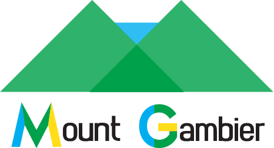
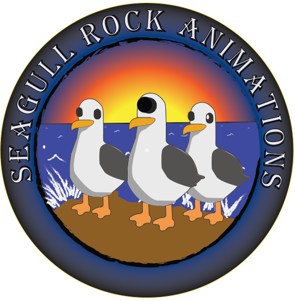
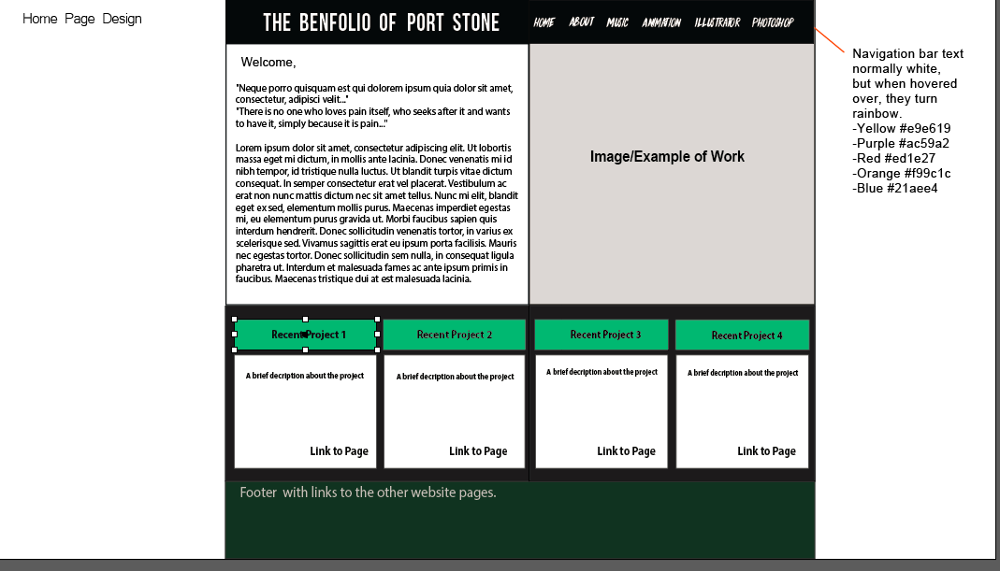

Mount Gambier Logo
The logo was for the City of Mount Gambier. I need to create an idenitity that represent the city. Mount Gambier is known for it's natural beauty and geology, such as the blue lakes, caves and sinkholes. I choose to empahsis this with the light blue colour found in my logo. The yellow represented the geology, caves and sinkholes. The green represent the rich agricultural history of Mount Gambier.
Mount Gambier also happens to be the location of the "Generations in Jazz festival", mentioned in the music page. Below is a PDF of the design amongst other designs I created. The final logo is displayed to the right.
PDF of designs of the logo.

Seagull Rock Seasalt
I made a logo of a fictitious company called "Seagullrock Seasalt". Illustrator was perfect for this (and any other logo) due to the vector graphics the program works in. Again, in the logo there was also considerable researching, planning and developing. One of the hardest aspects was designing the seagull. I wanted the seagull to look realistic, but also quite simple. The simple designs are easier for the audience to remember well.
PDF of designs
of the logo.

Sketches/Screenshots for this website
To create this website, I planned out the design and layout using illustrator. This was very helpful and a sucessful part of the creative process. Below are the sketches for each page and the screenshots for each page. Both were made in Illustrator. The sketches and screenshots then came to life in Adobe Dreamweaver.
PDF sketch 1.
PDF sketch 1.
PDF sketch 1.
PDF sketch 1.
PDF sketch 1.
PDF Screenshot Home.
PDF Screenshot About.
PDF Screenshot Music.
PDF Screenshot Animation.
PDF Screenshot Illustrator.
PDF Screenshot Photoshop.
